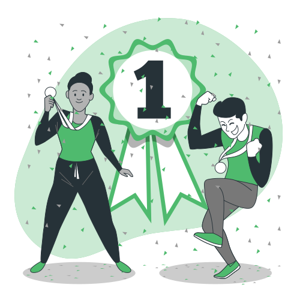

☰

Поздравляем с завершением первого модуля по JavaScript! Вы успешно погрузились в изучение этого непростого, но крайне занимательного языка.
В этом модуле вы:
- Узнали о том, что такое JavaScript и EcmaScript, в чём отличие между ними;
- Овладели базовым синтаксисом языка;
- Познакомились с операторами: логическими, циклическими, условными и научились с ними работать;
- Изучили все примитивные типы данных, а также некоторые сложные структуры: массивы и ассоциативные массивы, научились применять специальные методы;
- Научились работать с консолью браузера, debugger’ом и выбранным окружением, в котором написали и запустили свою первую программу.
Дальше будет ещё интереснее!